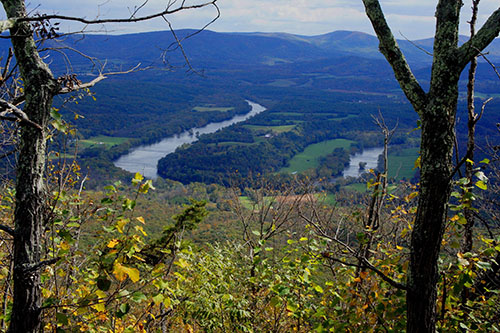
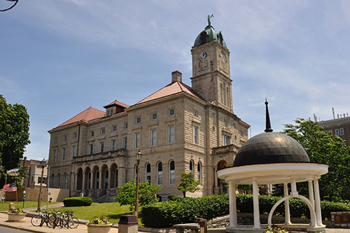
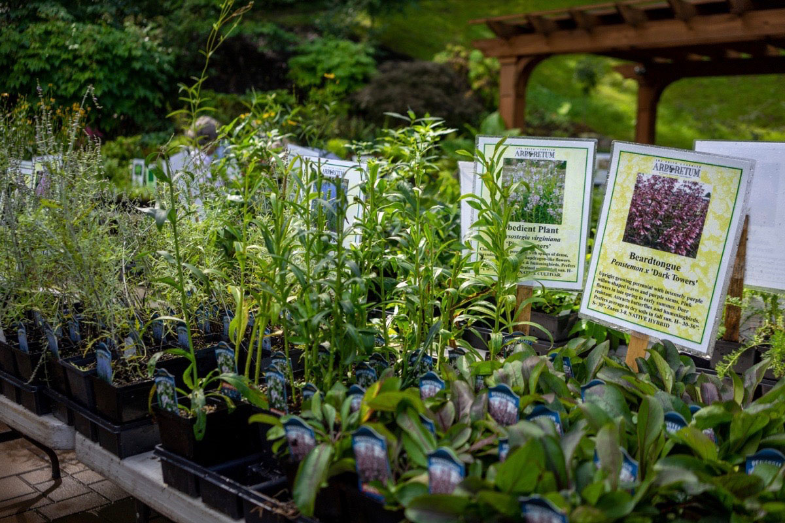
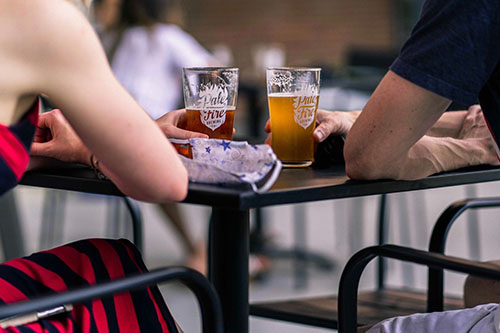
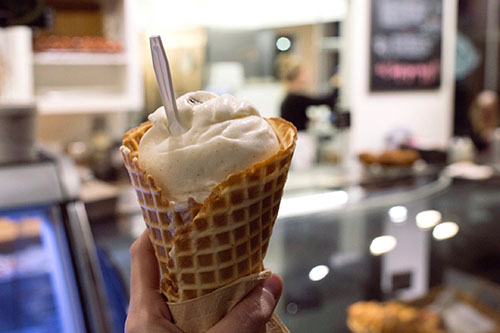
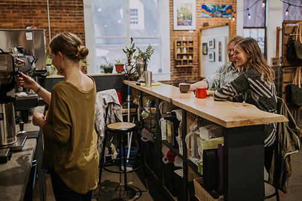

Discover local favorites...

The George Washington National Park expands through Virginia, West Virginia, and Kentucky. The North River Ranger District is situated just west of Harrisonburg. Be sure to check out all of the trails and natural wildlife.

Come explore this historical site located in the heart of downtown Harrisonburg. This was the site where Gen. Thomas J. “Stonewall” Jackson imprisoned about 2,000 Union soldiers after the first Battle of Winchester on May 25, 1862.

Experience the woodland trails of the local arboretum, landscaped with native plants and botanical gardens. You can stroll through the gardens, attend an event, or just relax on the lawn with some company.

At the Pale Fire brewery, you can sample a variety of locally-brewed beers, most of which are made fresh on site. The new tasting room features some of the best craft beer around and opens up to a large patio.

If you are looking to satisfy your sweet tooth, this is the place to go! With a choice between homemade bread, local coffee roasts, a pastry case full of treats, and award-winning gelato, it will be tough to pick just one thing.

Need some caffeine? Head to Broad Porch Coffee, where you will be sure to find all the locals. The small batch coffee shop is located in the Agora Downtown Market, and offers brewed coffee and espresso drinks.
{kind=link}
{kind=link}
{kind=link}
{kind=link}
{kind=link}
{kind=link}